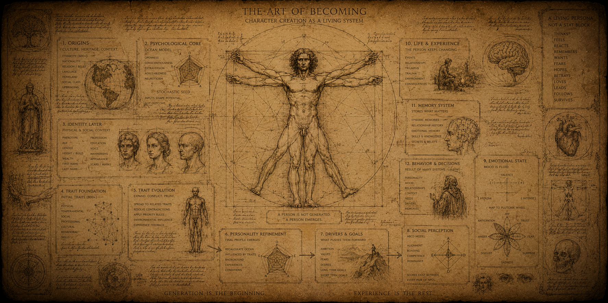
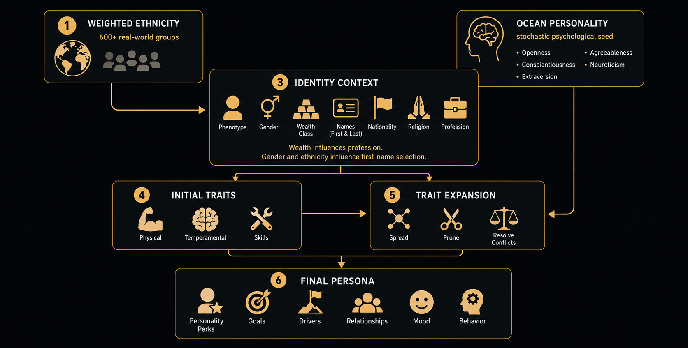
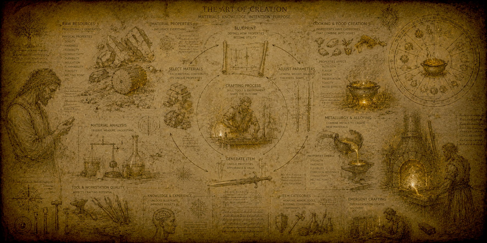
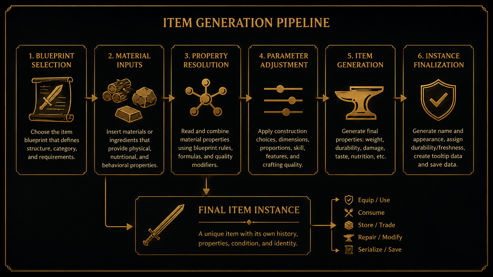
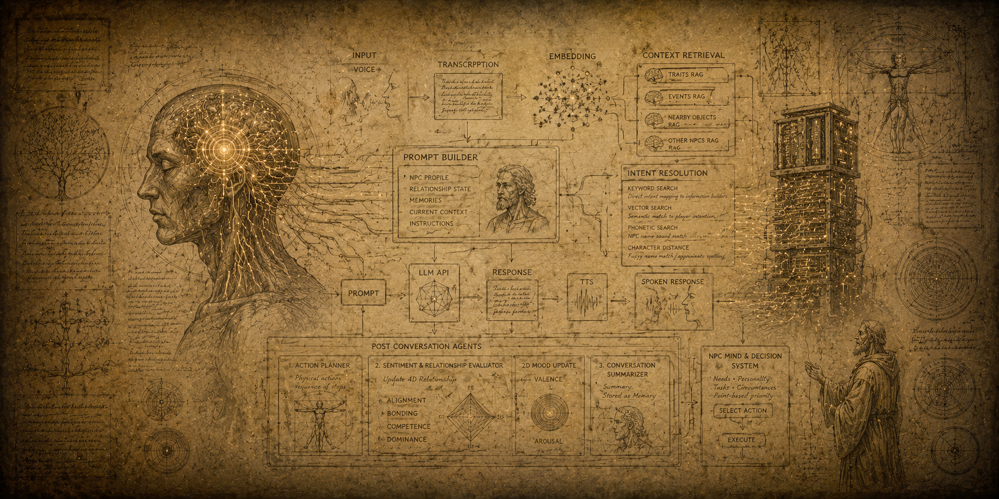
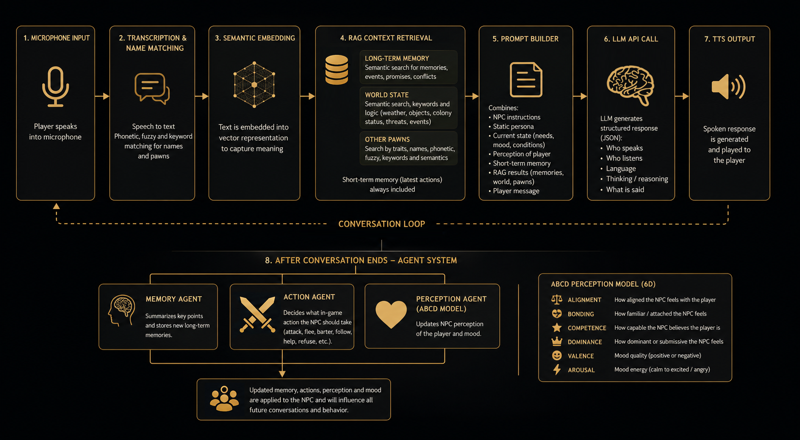

Colony


Tame the Wilderness.
And Build A Thriving Community.
From Scratch is a next-gen colony simulation that focuses on the stories within. Immerse yourself in interactive storytelling in a world populated with cutting-edge AI-driven characters.
- Intricate Intrigues & Factions
- Advanced AI-Powered NPCs
- Procedural Items & Worlds
- The Most Advanced Character System
About
Something Has Taken You...
That night felt no different at first. You went to bed as you always did — but your dreams were unusually vivid, stretching on with a clarity that felt almost real.
And then you woke up. Not in your bed, not in your home — but in the middle of an endless wilderness, surrounded by unfamiliar sounds and a sky that did not feel like yours.
You called out, hoping for an answer — any answer. But only the wind replied. Only the distant echo of something alive, somewhere. You gathered what you could to cover yourself, using whatever the land would give.
Then you noticed movement. Someone was there, hidden just beyond the brush, watching you. They spoke — words you couldn’t understand — and disappeared before you could react.
Not long after, you found another. This one approached carefully, speaking your language, offering something close to trust. Whether it was genuine… or something else entirely, you couldn’t yet tell.
You begin to understand the truth. You are not alone here — not even close. And survival will depend not just on what surrounds you, but on the people standing right beside you.
About the game
What is From Scratch?
From Scratch is a multiplayer third-person action survival colony sim about people who wake up in an unfamiliar wilderness with no equipment, no society, and no safety. You build a colony from nothing, recruit survivors, shape relationships, and try to hold a living community together while hunger, fear, ideology, conflict, and ambition pull it apart.
Colony
Build a society from nothing
AI
AI-driven colonists
World
Procedural worlds

Characters
Extremely detailed people
Society
Intrigue, factions, and internal conflict
AI
AI-driven colonists
Colonists have personalities, relationships, memories, and motives. They react to the world, to each other, and to you — not just to simple scripts.World
Procedural worlds
Terrain, resources, places, and populations are generated systemically, giving every world its own geography, opportunities, and problems.Crafting
Materials matter
Items are shaped by the materials they are made from. Wood, stone, metal, bone, hide, and fibers affect weight, durability, damage, comfort, and quality.Society
Intrigue, factions, and internal conflict
The greatest threat is not always outside the walls. Colonists can form alliances, rivalries, ideological groups, and hidden agendas.Characters
Extremely detailed people
Every character is generated with background, culture, traits, abilities, relationships, and physical details that make them more than just labor.Latest News
Development Updates
Core Systems
Built For Emergent Stories
From Scratch is not built around scripted quests. It is built around systems that collide, react, and create stories you did not plan.

Core System
Advanced Character System
A layered AI persona system where ethnicity, traits, OCEAN personality, mood, and four-dimensional relationships combine into believable colonists with memory, bias, ambition, loya...
Most colony sims generate characters as stat blocks. From Scratch treats them as people: culturally grounded, psychologically variable, socially entangled, and emotionally reactive. The result is a character generation pipeline designed not merely to create NPCs, but to create believable AI personas with memory, bias, ambition, loyalty, rivalry, fear, and desire.
The first step is ethnicity. From Scratch uses a weighted list of real-world ethnicities containing more than 100,000 individuals, resulting in more than 600 unique ethnic backgrounds.
Ethnicity is then used to derive a wider social and biological context: phenotypical features, gender, wealth class, last name, nationality, and religion. Wealth influences profession. Gender and ethnicity influence first-name selection. This combined identity profile then feeds into the trait system.

The first trait pass draws from roughly 800 unique traits, based on age, civilization, profession, and gender. These traits can be physical, temperamental, professional, cultural, behavioral, relational, or skill-based. Initial traits are then spread into related traits and combined with other traits to form new ones, while contradictory traits are removed.
A personality profile based on the OCEAN system is generated and nudged by certain traits. This personality profile is then used to add additional temperamental traits to the character, giving each persona a more distinct behavioral pattern.
Trait Resolution Pass
1. Seed
Ethnicity, OCEAN, gender, wealth, profession, religion, and nationality create the first identity layer.
2. Expand
Initial traits branch into related physical, mental, social, and skill-based traits.
3. Prune
Conflicting traits are removed, suppressed, or resolved through priority rules.
4. Finalize
The final personality profile generates perks, goals, ambitions, and behavioral tendencies.
Implementation Sketch
At code level, character generation is handled as a layered pipeline. Each stage adds a new part of the person: biological background, culture, names, wealth, profession, traits, personality, mood, ambitions, relationships, and finally the static persona used by the AI systems.
public static class CharacterGenerationPipeline
{
public static IHuman Generate(string seedStr)
{
var seed = SeedService.Create(seedStr);
// The weighted ethnicity roll is the root of the generated identity.
var ethnicity = EthnicityService.RollWeightedEthnicity(seed);
// Core identity is derived from ethnicity, civilization, gender, age, and social context.
var gender = GenderService.RollGender(ethnicity, seed);
var age = AgeService.RollAge(seed);
var wealth = WealthService.RollWealthClass(ethnicity, seed);
var nationality = NationalityService.RollNationality(ethnicity, seed);
var religion = ReligionService.RollReligion(ethnicity, seed);
var civilization = CivilizationService.GetCivilization(ethnicity);
// Names are culturally grounded instead of being selected from one generic fantasy list.
var firstName = NameService.RollFirstName(ethnicity, gender, seed);
var lastName = NameService.RollLastName(ethnicity, seed);
// Phenotype creates the visible body: skin, hair, face, height, build, and other inherited features.
var phenotype = PhenotypeService.Generate()
.WithEthnicity(ethnicity)
.WithGender(gender)
.WithAge(age)
.Build(seed);
// Wealth and civilization influence what kind of life the person had before arriving.
var profession = ProfessionService.RollProfession()
.WithGender(gender)
.WithWealth(wealth)
.WithEthnicity(ethnicity)
.WithCivilization(civilization)
.Build(seed);
// The first trait pass draws from demographic, cultural, physical, and professional conditions.
var seedTraits = TraitService.CreateInitial()
.WithAge(age)
.WithGender(gender)
.WithEthnicity(ethnicity)
.WithWealth(wealth)
.WithNationality(nationality)
.WithReligion(religion)
.WithProfession(profession)
.WithCivilization(request.Civilization)
.Roll(seed);
// Related traits branch outward from the first pass.
var expandedTraits = TraitService.CreateExpansion()
.WithSeedTraits(seedTraits)
.WithProfession(profession)
.Expand(seed);
// Some traits combine into new traits
var combinedTraits = TraitService.Combine(expandedTraits, seed);
// OCEAN starts as a psychological baseline and is then nudged by concrete life traits.
var ocean = OceanPersonalityService.GenerateBaseline(seed);
ocean = OceanPersonalityService.ApplyTraitInfluence(ocean, resolvedTraits);
// The adjusted personality profile creates additional behavioral and temperamental traits.
var temperamentTraits = TraitService.GenerateFromOcean(ocean, seed);
var finalTraits = TraitService.ResolveContradictions(resolvedTraits.AddRange(temperamentTraits));
// Skills are inferred from traits.
var skills = SkillGenerationService.Generate()
.WithTraits(finalTraits)
.Build(seed);
// Motivations make the character want something before the simulation even begins.
var motivations = MotivationsService.Generate()
.WithTraits(finalTraits)
.WithProfession(profession)
.WithReligion(religion)
.WithWealth(wealth)
.WithOcean(ocean)
.Build(seed);
// The generated identity is assembled into a single human data object.
var human = HumanFactory.Create()
.WithName(firstName, lastName)
.WithGender(gender)
.WithAge(age)
.WithEthnicity(ethnicity)
.WithNationality(nationality)
.WithReligion(religion)
.WithWealth(wealth)
.WithProfession(profession)
.WithPhenotype(phenotype)
.WithTraits(finalTraits)
.WithOcean(ocean)
.WithSkills(skills)
.WithMotivations(motivations)
.Build();
// The static persona is what the AI dialogue and behavior systems later inject into prompts.
var persona = PersonaService.BuildStaticPersona()
.WithHuman(human)
.WithIdentity()
.WithCulture()
.WithPersonality()
.WithSpeechStyle()
.WithAmbitions()
.WithBiases()
.WithFears()
.Build();
PersonaService.Assign(human, persona);
CharacterGenerationEventService.RaiseCharacterGenerated(human);
return human;
}
}
Relationships Are Four-Dimensional
From Scratch does not treat relationships as a single friendship number. Every NPC maintains a four-axis ABCD perception score of every other NPC. These values determine how people interpret each other, who they trust, who they follow, who they resent, and who they try to influence.
Alignment
How much two people want the same things.
Bonding
How emotionally close or attached they are.
Competence
How useful, capable, or reliable one sees the other as being.
Dominance
Who holds social power in the relationship.
This allows for relationships that are much more nuanced than “friend†or “enemy.†A colonist can respect someone’s competence while disliking them. They can feel bonded to a person whose ambitions are dangerous. They can follow a leader they do not love, or betray a friend whose goals threaten the colony.
Mood Changes the Meaning of Personality
Behavior is also filtered through the NPC’s current mood. From Scratch uses a dual-axis mood score: valence and arousal. Valence measures whether the emotional state is positive or negative. Arousal measures whether it is calm or intense. This state is then projected onto a Plutchikian wheel of emotions, allowing the same personality to behave differently depending on fear, anger, joy, sadness, anticipation, disgust, surprise, or trust.
The result is that a colonist is not simply “aggressive†or “kind.†They may be generous when calm, defensive when afraid, reckless when excited, or cruel when humiliated. Social dynamics emerge from the combination of personality, mood, relationship perception, and situational pressure.
Why This Matters
Because every persona is generated from layered identity, evolving traits, a final personality profile, emotional state, and four-axis social perception, the colony can produce relationships that make sense. Friendships form because people share goals and bond over events. Factions emerge because aligned people find each other. Rivalries develop because competence, dominance, ambition, and emotion collide.
This is why I believe From Scratch is building one of the most complex AI persona systems in games: characters are not assembled from isolated stats, but from overlapping identity, personality, mood, and social systems that continuously shape how they behave, who they trust, and what they become.

Core System
Procedural Crafting & Metallurgy
A deep dive into how From Scratch simulates materials, crafting, cooking, and procedural metallurgy.
From Scratch does not treat items as fixed database entries. Raw resources, materials, food, equipment, tools, weapons, armor, meals, and crafted objects are all built from the same underlying idea: blueprints define structure, materials provide parameters, and item instances emerge from the combination.
Most games define items as static objects: a sword has fixed damage, a meal has fixed nutrition, and a material is usually just an ingredient tag. From Scratch uses a more systemic approach. An item blueprint describes what something can become, while the chosen materials determine what that specific item actually is.
A weapon, tool, armor piece, building material, food item, or cooked meal can all carry generated values. Weight, durability, damage, attack speed, taste, calories, nutrition, shelf life, appearance, and other properties can be calculated from the ingredients or materials used to create the item.
This means that two objects with the same blueprint can still become mechanically different. A spear made from soft wood and bone is not the same as a spear made from hardwood and obsidian. A meal made from fish, berries, and herbs is not the same as a meal made from meat, fat, and mushrooms.
The goal is not to create a static recipe list. The goal is to create a simulation where materials,
ingredients, skill, durability, and construction choices matter.

One Architecture For Many Item Types
The system is built around a clear separation between blueprints and item instances. A blueprint stores stable design data: name, description, icon, mesh, stackability, material slots, base properties, equipment rules, food values, or skill requirements.
The item instance stores the generated state of one actual object: amount, durability, selected materials, generated properties, freshness, reservations, tooltip data, and serialized save data. This allows simple resources, equipment, food, and meals to share the same architectural foundation.
Item Resolution Pipeline
1. Blueprint
The system selects the item definition: material, food, weapon, armor, tool, meal, or another item type.
2. Requirements
The blueprint defines material slots, food ingredients, equipment rules, skill requirements, or stack behavior.
3. Inputs
Concrete materials or ingredients are inserted into the blueprint.
4. Parameters
Physical, nutritional, taste, durability, and utility properties are read from the inputs.
5. Instance
A real item is created with generated name, values, freshness, durability, materials, and tooltip data.
6. Simulation
The item can be equipped, consumed, stored, split, merged, reserved, serialized, damaged, or used.
Implementation Sketch
At code level, the item system can be understood as one streamlined pipeline. The same flow can create raw materials, crafted equipment, weapons, food, and procedural meals. The blueprint defines the structure, while materials and ingredients provide the data used to generate the final object.
public static class ItemSystemPipeline
{
public static IItem Create(ItemCreationRequest request)
{
// The blueprint defines the structure of the item.
var blueprint = ItemBlueprintService.Get(request.BlueprintName);
// Simple stackable objects, such as raw resources or basic food, can be created directly.
if(blueprint is IMaterialItemBlueprint materialBlueprint)
{
return materialBlueprint.MakeItem(request.Amount);
}
if(blueprint is IFoodItemBlueprint foodBlueprint && request.Ingredients.Count == 0)
{
var food = foodBlueprint.MakeItem(request.Amount);
FoodSpoilageService.InitializeExpireTimes(food, foodBlueprint.ShelfLife);
return food;
}
// Meals are generated from food ingredients rather than fixed recipes.
if(request.ItemType == EGeneratedItemType.Meal)
{
var mealBlueprint = MealBuilder.CreateBlueprint()
.WithMealType(request.MealType)
.WithIngredient(request.Ingredients.ElementAtOrDefault(0))
.WithIngredient(request.Ingredients.ElementAtOrDefault(1))
.WithIngredient(request.Ingredients.ElementAtOrDefault(2))
.Build();
var meal = mealBlueprint.MakeItem();
FoodSpoilageService.InitializeExpireTimes(meal, mealBlueprint.ShelfLife);
TooltipService.BuildModules(meal);
ItemEventService.RaiseItemCreated(meal);
return meal;
}
// Craftable and equiptable objects require concrete material choices.
var craftableBlueprint = blueprint as ICraftableItemBlueprint;
if(craftableBlueprint == null)
return blueprint.MakeItem();
// The blueprint defines which material categories are required.
var materialPlan = MaterialSelectionService.ResolveMaterials()
.WithRequiredMaterialSlots(craftableBlueprint.MaterialList)
.WithAvailableMaterials(request.AvailableMaterials)
.WithCraftingQuality(request.CraftingQuality)
.Build();
var materialBlueprints = materialPlan
.Select(x => x.Entry)
.ToList();
// The item name is generated from the blueprint template and the selected materials.
var instanceName = craftableBlueprint.GetInstanceName(materialBlueprints);
// Base properties come from the blueprint.
var baseProperties = craftableBlueprint.GetBaseProperties();
// Material parameters come from the inserted material blueprints.
var materialParameters = MaterialParameterService.Read(materialBlueprints);
// Final properties are calculated from blueprint values, material properties, quality, and features.
var generatedProperties = ItemPropertyService.Calculate()
.WithBaseProperties(baseProperties)
.WithMaterialParameters(materialParameters)
.WithCraftingQuality(request.CraftingQuality)
.WithFeatures(request.Features)
.Build();
// The concrete item instance is created.
var item = craftableBlueprint.MakeItem(materialPlan);
ItemInstanceService.ApplyGeneratedData()
.To(item)
.WithName(instanceName)
.WithMaterials(materialPlan)
.WithProperties(generatedProperties)
.WithDurability(request.StartingDurability)
.Apply();
// Equiptable items connect crafted objects to character skill, equipment slots, and use rules.
if(item is IEquiptableItem equiptableItem)
{
EquiptableItemService.Configure()
.WithEquipmentSlot(equiptableItem.EquipmentSlot)
.WithSkillRequirements(equiptableItem.SkillRequirements)
.WithDurability(request.StartingDurability)
.Apply(equiptableItem);
}
// Weapons expose generated combat values.
if(item is IWeapon weapon)
{
WeaponItemService.Configure()
.WithAttackType(weapon.AttackType)
.WithPierceDamage(weapon.PierceDamage)
.WithCutDamage(weapon.CutDamage)
.WithBluntDamage(weapon.BluntDamage)
.WithAttackSpeed(weapon.AttackSpeed)
.WithAttackRange(weapon.AttackRange)
.WithStaminaCost(weapon.StaminaCost)
.Apply(weapon);
}
TooltipService.BuildModules(item);
ItemEventService.RaiseItemCreated(item);
return item;
}
}Blueprints Define Structure
A blueprint is the stable definition of an item type. It defines the rules for what the item can be, but not necessarily the final values of one specific instance. A weapon blueprint may define material slots, attack animation, equipment slot, and property formulas. A food blueprint may define calories, taste, nutrition, shelf life, and consumption effects.
Base Blueprint
Defines shared item data such as name, description, weight, icon, mesh, and object creation.
Material Blueprint
Defines material type, short name, texture, color, stackability, and physical property values.
Food Blueprint
Defines taste, calories, nutrition, shelf life, food category, and consumption effects.
Equiptable Blueprint
Defines equipment slot, skill requirements, base properties, material requirements, and use rules.
Materials Are Parameter Sources
Materials are not just crafting ingredients. They are parameter containers. Wood may differ in hardness, density, flexibility, insulation, flammability, or durability. Stone may vary in brittleness, heat resistance, weight, or structural strength. Metals may differ in toughness, elasticity, sharpness retention, melting point, and corrosion resistance.
These values are used by blueprints to calculate the final utility of crafted objects. A heavy material can increase weight and impact. A hard material can improve cutting or piercing. A beautiful material can improve aesthetics. A fragile material can reduce durability. A material that is difficult to work with can require greater skill or produce worse results when crafted poorly.
Material Influence
Mass
Influences item weight, stamina cost, blunt force, and handling.
Hardness
Influences cutting, piercing, durability, and edge quality.
Durability
Influences how long the item lasts before breaking or degrading.
Aesthetics
Influences beauty, value, prestige, and social perception.
Craftability
Influences how difficult the material is to shape into a useful object.
Specialization
Different material types matter for different item categories and construction slots.
Crafting Is Blueprint Driven
Crafted objects are built from blueprints. A blueprint defines which material categories are needed and how the physical properties of those materials influence the final item.
A spear blueprint may prioritize shaft flexibility, total weight, impact force, and tip hardness. A bow blueprint may heavily value elasticity and tensile strength. Armor may depend on density, hardness, insulation, and toughness. A tool may care more about durability, craftability, edge retention, and handling.
Many crafted objects can also expose adjustable parameters during construction. Length, width, thickness, balance, head size, edge geometry, and weight distribution can all change how the final item performs.
Crafting Resolution
1. Select Blueprint
The player or system chooses what kind of object is being made.
2. Fill Material Slots
The required material categories are filled with concrete materials.
3. Read Properties
The chosen materials contribute their procedural physical values.
4. Apply Parameters
Dimensions, quality, skill, features, and construction choices modify the result.
5. Generate Object
The final item receives name, durability, weight, properties, appearance, and tooltip data.
Equiptable Items Connect Crafting To Characters
Equiptable items add character-facing rules on top of crafting. They can define equipment slots, skill requirements, durability, use sounds, attack animations, and whether a character is able to use them.
A generated weapon does not only contain a single damage number. It exposes multiple combat values: stamina cost, attack speed, attack range, piercing damage, cutting damage, blunt damage, animation type, weight, durability, and whether the weapon is one-handed or two-handed.
Equipment Slot
Determines whether the item belongs in the primary hand, armor slot, tool slot, or another equipment location.
Skill Requirements
Prevents characters from using equipment they are not skilled enough to handle.
Generated Properties
Turns material and blueprint data into actual gameplay values.
Durability
Allows individual items to degrade, break, be repaired, or matter as unique objects.
Food Is Built From Properties, Not Only Recipes
Food follows the same philosophy as materials and equipment. Food items have properties such as calories, nutrition, taste, shelf life, freshness, and consumption effects. These values are not just display text; they directly influence survival, hunger, mood, traits, and how long food remains usable.
Every stack of food tracks its own expiration data. When food is split, merged, consumed, or stored, freshness is preserved through the item instance rather than being treated as a simple global number. This allows two stacks of the same food to have different remaining shelf life.
Meals Are Procedural Combinations
Meals are generated from ingredients instead of being limited to fixed handcrafted recipes. A meal blueprint can be created from one, two, or three food ingredients. The final meal receives a generated name, description, icon, combined food properties, shelf life, taste profile, and nutrition values.
Ingredients contribute more than category labels. They can add calories, nutrition, taste, preservation quality, and consumption effects. A dish may become nutritious but bland, delicious but unhealthy, highly energizing but short-lived, or culturally desirable but difficult to preserve.
Meal Generation
1. Choose Meal Type
The system selects whether the result is a stew, roast, mix, prepared dish, or another meal form.
2. Add Ingredients
One to three food blueprints are inserted into the meal builder.
3. Combine Properties
Calories, nutrition, taste, shelf life, and effects are combined into the final food profile.
4. Generate Identity
The meal receives a generated name, description, icon, and food category.
5. Track Freshness
The item instance receives expiration times so individual meals can spoil independently.
Consumption Creates Consequences
Food is not only inventory weight. When consumed, it can affect hunger, fluids, temporary traits, rates of change, and character state. A meal can therefore become part of the broader survival and personality simulation.
Calories
Restore hunger and determine how much practical energy the food provides.
Nutrition
Represents the quality of the food beyond raw calories.
Taste
Can influence preferences, mood, satisfaction, and cultural expectations.
Effects
Food can modify fluids, apply temporary traits, or influence the character after consumption.
Metallurgy Extends The Same System
Metalworking uses the same item architecture. Metals can be refined, processed, and combined into alloys with blended physical characteristics. Instead of unlocking predefined upgrades, metallurgy changes the underlying material properties that later feed back into crafting.
One alloy may become extremely hard but brittle. Another may sacrifice edge retention for flexibility. Others may optimize corrosion resistance, conductivity, low weight, or structural strength. The resulting material then becomes a new input for weapons, tools, armor, construction, and trade.
Tooltips And Serialization
Because items are generated dynamically, the interface cannot rely only on manually written descriptions. Tooltips are built from the actual item values. The player can inspect weight, freshness, taste, calories, durability, damage, attack speed, material properties, and other generated statistics.
The same generated state can also be serialized. The system stores the item type, blueprint name, amount, material list, generated template values, durability, expiration times, and properties. This allows the game to save and recreate specific item instances rather than only recreating their blueprint.
Saving an item does not only mean saving “Stone Axe†or “Cooked Meal.â€
It means saving this specific object, with these materials, these ingredients,
this durability, this freshness, and these generated properties.
Why This Matters
This item system makes crafting, cooking, equipment, and material processing part of the same simulation. Materials matter because they change the object. Ingredients matter because they change the meal. Skills matter because not every character can craft or equip everything. Durability matters because individual objects have condition and history. Freshness matters because food exists in time.
The result is an ecosystem where rare resources matter because their properties matter, geography matters because different regions produce different materials and foods, and knowledge matters because understanding material behavior becomes part of mastery.
From Scratch treats items as generated simulation objects rather than static progression rewards. A crafted object carries the history of its materials, the choices made during construction, the quality of the crafter, and the environment it came from.

Core System
AI Conversation & Memory Pipeline
A speech-driven NPC communication system where player voice is converted into semantic intent, enriched with world context, answered in-character, and then used to update memory, m...
From Scratch allows players to speak directly with AI-driven NPCs. The system is not simply a chatbot layer placed on top of dialogue. It is a complete communication pipeline where microphone input becomes transcribed text, names are corrected through phonetic matching, messages are embedded, relevant memories and world information are retrieved, and the final prompt is built around the NPC’s personality, state, perception, and situation.
The first stage is player voice input. The player speaks through a microphone, after which the audio is transcribed into text. Before the text continues through the language pipeline, the system attempts to solve one of the largest challenges of voice interfaces: names and references.
The transcription is searched phonetically for full names and important entities. If the player pronounces a generated name incorrectly, or speech recognition misunderstands it, the system can still identify the intended character through phonetic matching, fuzzy search, keywords, and semantic similarity.
After correction, the message is transformed into embeddings that allow semantic search across memories, world knowledge, nearby individuals, and relevant context. The goal is not only to understand words, but to understand meaning.
Dialogue is not simply a chatbot wrapper. It is a multi-stage simulation pipeline connecting speech,
memory, personality, perception, relationships, and behavior.

Conversation Pipeline
The purpose of the pipeline is to gradually transform raw voice input into meaningful consequences inside the simulation. Each stage adds additional information before the final response is generated.
Dialogue Pipeline
1. Microphone Input
The player speaks naturally through voice input.
2. Transcription
Speech is converted into text and corrected through phonetic matching.
3. Embeddings
The message is converted into vector representations to capture semantic meaning.
4. Context Retrieval
Memories, world knowledge, nearby people, and social context are retrieved.
5. Prompt Builder
NPC state, personality, perception, and retrieved context are combined.
6. LLM Call
The structured prompt is sent to the language model.
7. TTS Output
The generated response is spoken back to the player.
Implementation Sketch
At code level, the system is organized as a readable pipeline. Each step delegates the actual work to specialized services, while the pipeline itself controls the order of operations from speech capture to post-conversation consequences.
public static class AIConversationPipeline
{
public static async Task Speak(IPlayer player, IHuman npc, EVocalLevel vocalLevel, ELanguage language, Vector3 location, Quaternion direction, CancellationToken cancellationToken)
{
// Capture and normalize the player's spoken input.
var audio = await MicrophoneService.Capture(vocalLevel, cancellationToken);
var rawText = await TranscriptionService.Transcript(audio, language, cancellationToken);
var correctedText = NameMatchingService.ReplacePhoneticNameMatches(rawText);
// The corrected text becomes the semantic key for memory, people, and world-state retrieval.
var embedding = await EmbeddingService.Embed(correctedText, cancellationToken);
var relevantPeople = PawnSearchService.SearchRelevantPeople(correctedText, embedding, location);
// RAG contains external context the NPC may need to answer meaningfully.
var ragContext = RagContextBuilder.Create()
.WithLongTermMemories(LongTermMemoryService.Search(npc, correctedText, embedding))
.WithWorldContext(WorldStateRagService.Search(correctedText, embedding, location))
.WithRelevantPeople(relevantPeople)
.Build();
// Prompt context combines the NPC's identity, current state, perception, and retrieved context.
var promptContext = PromptContextBuilder.Create()
.WithNpc(npc)
.WithPlayer(player)
.WithLanguage(language)
.WithPlayerMessage(correctedText)
.WithStaticPersona(PersonaService.GetPersona(npc))
.WithNpcState(PawnStateService.GetState(npc))
.WithPerception(PerceptionService.GetPerception(npc, player))
.WithShortTermMemory(ShortTermMemoryService.GetNewest(npc, 10))
.WithRagContext(ragContext)
.Build();
var prompt = PromptService.BuildNpcPrompt(promptContext);
var response = await LlmService.Send(prompt, cancellationToken);
var spokenText = ResponseParserService.GetSpokenText(response);
// TTS is optional; the conversation still exists as text if voice output is disabled.
await TtsService.SpeakIfEnabled(spokenText, language, npc, cancellationToken);
ConversationLogService.AddExchange(player, npc, correctedText, spokenText);
if(!ConversationService.HasConversationEnded(response))
return;
var conversation = ConversationLogService.GetConversation(player, npc);
// After the dialogue ends, agents convert the conversation into simulation consequences.
var memoryResult = await MemoryAgentService.Process(npc, player, conversation, cancellationToken);
var actionResult = await ActionAgentService.Process(npc, player, conversation, cancellationToken);
var perceptionResult = await PerceptionAgentService.Process(npc, player, conversation, cancellationToken);
MemoryService.Apply(npc, memoryResult);
PerceptionService.Apply(npc, player, perceptionResult);
// The action result becomes an executable in-game behavior.
var actionCommand = ActionCommandFactory.Create(npc, actionResult);
actionCommand.Execute();
ConversationEventService.RaiseConversationEnded(player, npc, conversation);
ConversationLogService.ClearConversation(player, npc);
}
}Multi-Layer Context Retrieval
NPCs do not answer only from the player’s message. Before the prompt is built, information is retrieved from multiple independent context layers.
Long-Term Memory
Semantic vector search retrieves relevant memories, conflicts, promises, and previous experiences.
World State
Weather, colony status, nearby objects, threats, events, and dynamic systems are retrieved.
Other Characters
NPCs are identified through names, traits, semantic similarity, fuzzy matching, and phonetics.
Short-Term Memory
The newest actions and recent events are always directly injected into the prompt.
Prompt Construction
Once relevant context has been retrieved, a structured prompt is created. The objective is not to generate generic dialogue, but to generate responses from a specific simulated individual.
Prompt Composition
NPC Instructions
The model is instructed to behave as an NPC rather than an assistant.
Static Persona
Culture, personality, values, background, and communication style.
Current State
Needs, injuries, hunger, exhaustion, mood, stress, and physical condition.
Perception
The NPC’s perception of the player influences tone and behavior.
Retrieved Context
Relevant memories, individuals, and world information.
Player Message
The interpreted player message is injected last.
Structured LLM Output
The language model returns structured JSON rather than plain text. This makes it easier to connect dialogue back into simulation systems.
Example structure:
Speaker → Listener → Language → Internal Reasoning → Spoken Dialogue
Only the spoken dialogue becomes visible to the player. The remaining information is used internally to maintain context, participants, language, and underlying intent.
Post-Conversation Agent System
Once dialogue ends, specialized agents evaluate which consequences the conversation should create. This is where dialogue becomes memory, behavior, relationships, and emotional change.
Memory Agent
Summarizes important information and stores new memories for future retrieval.
Action Agent
Determines behaviors such as helping, trading, fleeing, attacking, following, or refusing.
Perception Agent
Updates the NPC’s perception of the player and internal emotional state.
Conversations do not stop when dialogue ends. They create consequences that influence future behavior.
ABCD Perception Model
NPC perception is represented through six dimensions. The first four describe the relationship toward the player, while the final two describe the NPC’s internal emotional state.
Six-Dimensional Perception System
Alignment
How closely the NPC’s goals, values, and intentions align with the player’s.
Bonding
Attachment, trust, familiarity, and social closeness.
Competence
How capable, reliable, or skilled the NPC believes the player is.
Dominance
Power dynamics, submission, confidence, fear, and social hierarchy.
Valence
Whether the emotional state is positive or negative.
Arousal
The emotional energy level: calm, tense, fearful, excited, or aggressive.
The perception agent evaluates conversations using roughly forty different conversational vibes, such as neutral, stubborn, naive, creative, pessimistic, arrogant, manipulative, or compassionate. These vibes influence perception differently.
The updated perception state is compared against predefined relationship archetypes. These archetypes have their own ABCD baselines and become human-readable descriptions injected into future prompts.
Example:
"_FIRSTNAME tolerates _OTHERPERSON. Although _FIRSTNAME is not particularly fond of _OTHERPERSON and remains
somewhat skeptical and cautious, _FIRSTNAME does not directly oppose _OTHERPERSON."
Why This Matters
The goal is not simply to create NPCs that can talk. The goal is to integrate conversation directly into the colony simulation itself.
Speech can change memories, trust, mood, social standing, perception, and future behavior. An insult can become a memory. A threat can create fear. A promise can be remembered. Praise can strengthen bonding. Commands can be accepted, questioned, refused, or transformed into actions.
Conversation therefore becomes a gameplay system rather than an isolated dialogue box.
Media
Glimpses From The Wilderness
Screenshots, atmosphere shots, system previews, and visual moments from the world of From Scratch.